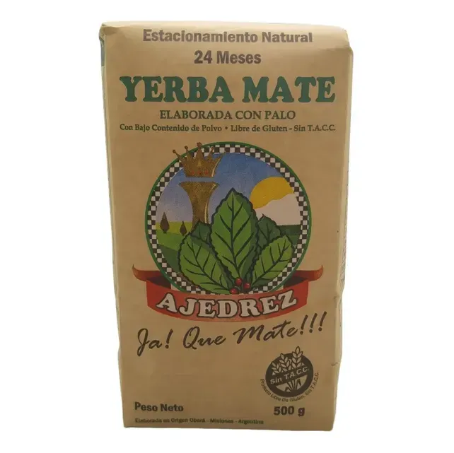
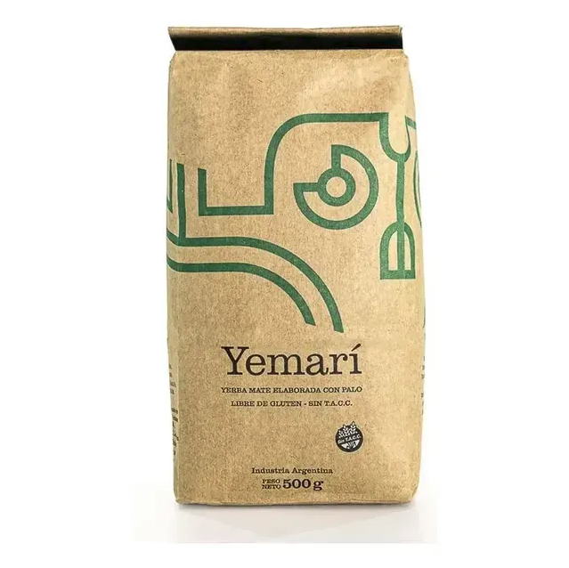
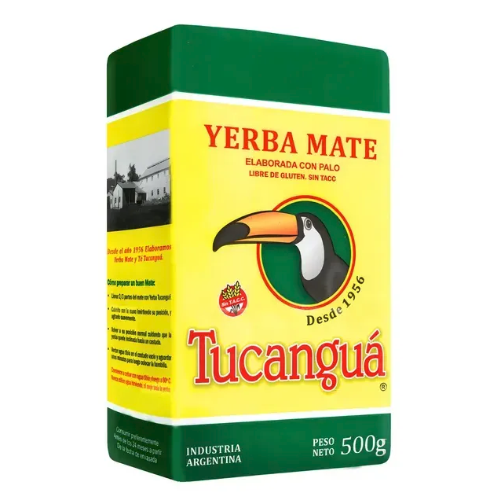
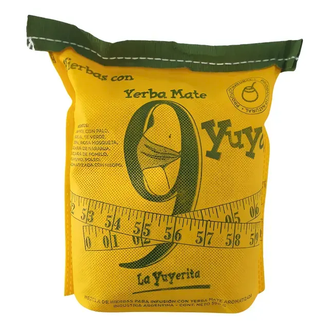
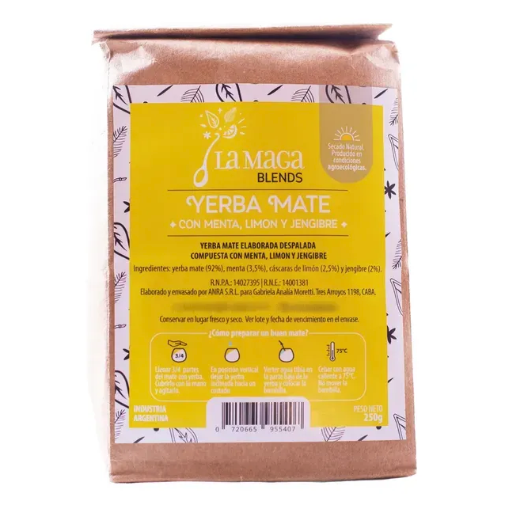
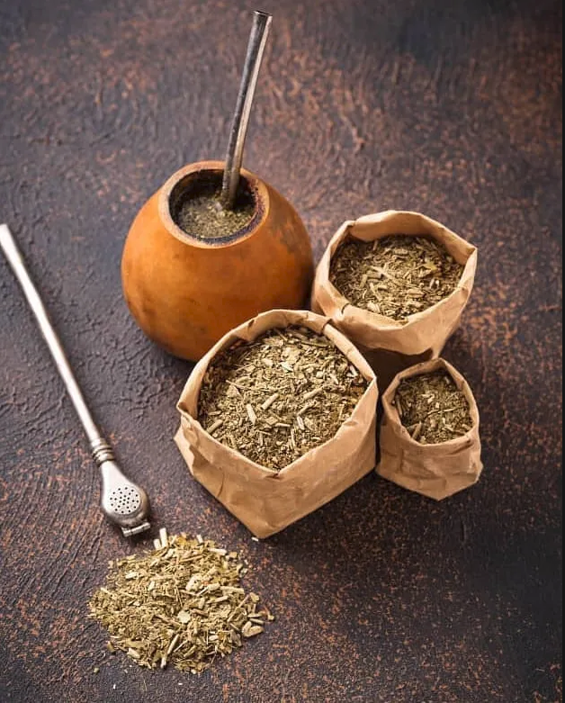

NUESTROS PRODUCTOS

Yerba Mate Ajedrez

Yerba Mate Yemarí

Yerba Mate Tucanguá

Yerba Mate Yuyerita

Yerba Mate La Maga
¿Cual vas a elegir hoy?
NUESTRAS YERBAS
El mate que me gusta
Cuando tomamos un mate, el tiempo de estacionamiento y las proporciones de hoja, palo y polvo (el blend); van a influir en el sabor, intensidad y duración del mate. Cada marca de Yerba Mate, determina el tiempo de estacionamiento para su producto y elabora su propio blend; es decir que el tiempo y las proporciones de hoja, palo y polvo van a variar.
Yerba mate con palo
Si queremos disfrutar de un mate suave, la Yerba Mate tradicional es una buena opción. Posee un promedio de 70% hojas secas y trituradas y un 30% de palo. Es importante recordar, que según el Código Alimentario Argentino, tiene que tener al menos un 65% de hojas desecadas, rotas o pulverizadas y no más de un 35% de palo.
Yerba mate orgánica
Para su elaboración se tiene en cuenta el cuidado del medio ambiente. Desde la siembra hasta la cosecha, se evita la utilización de agroquímicos. Existen distintos organismos nacionales e internacionales que certifican tanto el proceso de elaboración como la utilización de materiales reciclables en envases y empaques. En Argentina, el Ministerio de Agroindustria otorga el sello “Orgánico" a los productos que minimizen el uso de los recursos no renovables y no utilicen fertilizantes y plaguicidas sintéticos, logrando así proteger el medio ambiente y la salud humana.
Yerba mate Barbacuá
Es la yerba mate sometida a un proceso de secanza utilizado por los nativos guaraníes. Barbacuá significa "tostado" en guaraní. Consiste en un proceso lento y artesanal, en el que las hojas son expuestas al calor del fuego de leña durante todo un día. Este proceso le da a la Yerba Mate un ligero sabor ahumado o tostado propio de las maderas utilizadas durante el secado de las hojas.

Yerba mate compuesta
Contiene hierbas como el boldo, tilo, manzanilla, poleo (entre otras). A las propiedades antioxidantes y energizantes de la Yerba Mate, se suman las propiedades de las hierbas naturales. Algunas pueden tomarse después de una comida, ya que muchas de estas hierbas son digestivas. Otras producen una sensación reconfortante, relajante y de bienestar. El Código Alimentario Argentino dice que cada paquete debe contener hasta un 40% de hierbas aromáticas , el 60% restante deberá contener yerba mate.
Yerba mate saborizada
Para los que prefieren ir cambiando los sabores y no gustan de los mates amargos e intensos, pueden encontrar en las góndolas una amplia variedad de yerbas elaboradas con esencias naturales y sabores que van desde los cítricos (pomelo, limón, naranja) hasta los exóticos como frutos del bosque y tropicales.
Yerba mate para tereré
Para su elaboración, se utiliza yerba mate con una molienda más gruesa. El tereré es una bebida típica del Paraguay y del litoral de Argentina. Se toma con agua fría o jugos naturales. Tiene menor contenido de polvo, esto evita que se obstruya la bombilla. Si utilizamos la yerba mate tradicional, es probable que la combinación de agua fría con el polvo obstruya la bombilla. Por eso, es aconsejable emplear esta yerba, que tiene una molienda más gruesa y menos polvo.
Yerba mate sin palo o despalada
Para los que gustan de un mate más fuerte, duradero y de sabor intenso, la opción es utilizar la Yerba Mate sin palo. El Código Alimentario Argentino establece que la yerba mate sin palo debe tener no menos de un 90% de hojas desecadas, rotas o pulverizadas y no más de un 10% de palo.